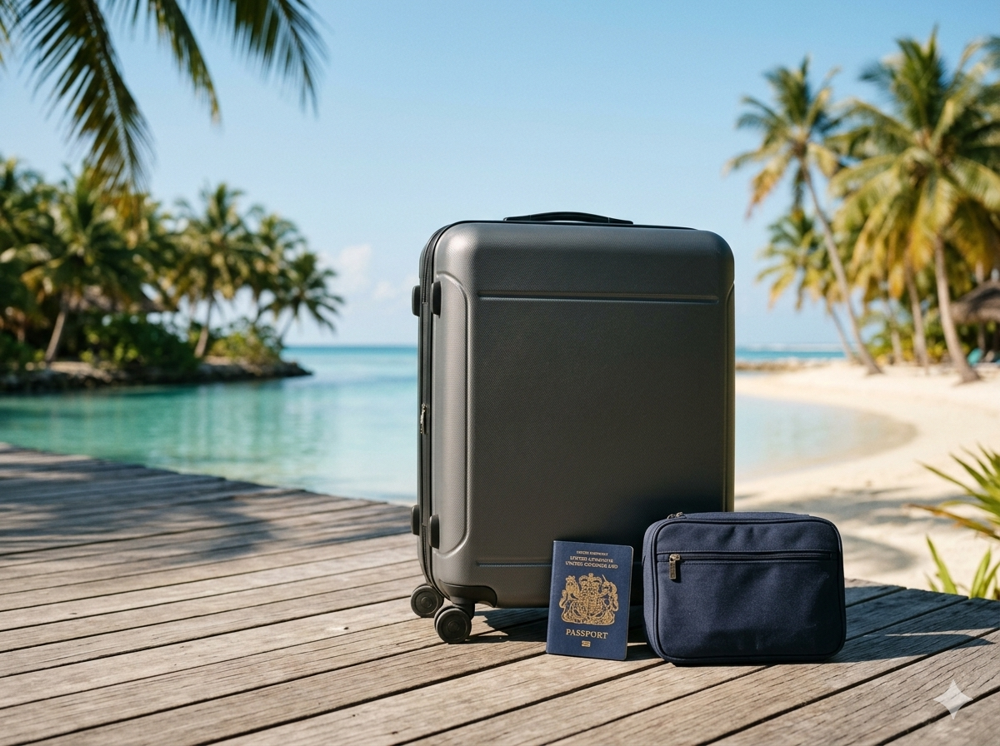
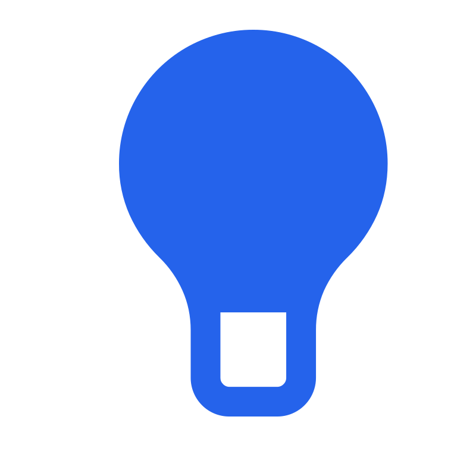
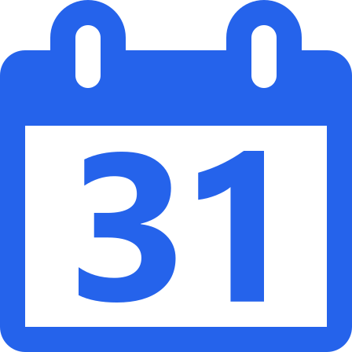
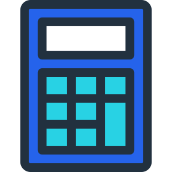
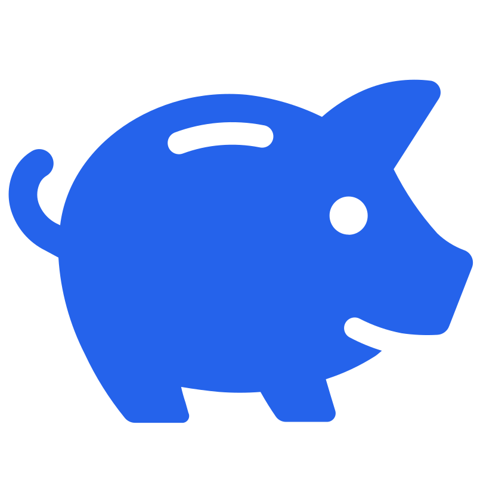
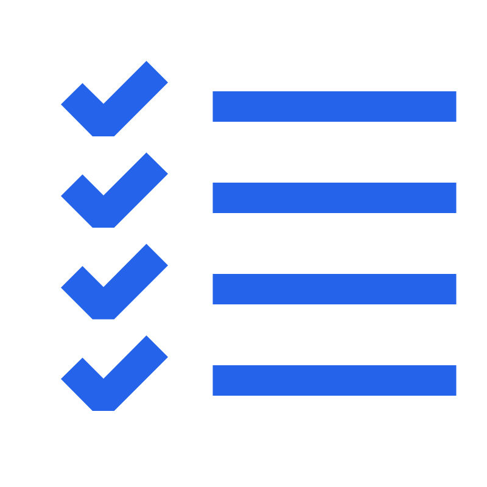

How to Save Money for a Vacation
A vacation gives you something to look forward to, but paying for flights, accommodation, food, and activities takes planning. A dedicated savings goal can help you turn your travel plans into a realistic budget, one contribution at a time.

Decide what kind of vacation you want.
Before calculating how much you need to save, think about the trip you want to take. Do you want to visit another country, spend a few days in a nearby city, or enjoy a longer holiday with your family?
You do not need to plan every detail immediately. However, having a destination and a rough idea of the length of your trip will make it easier to estimate the cost.
It also helps to understand why the trip matters to you. Perhaps you want to experience a new culture, spend time with someone important to you, or take a break from your usual routine.

A specific trip gives you something concrete to work toward and helps you make decisions about your budget and timeline.
Turn your vacation into a savings goal.
A goal called "Vacation" is a reasonable starting point, but it does not tell you how much you need or when you want to travel. Giving the goal more detail makes it easier to plan the next steps.
For example, you could create a goal such as:
Once you have a destination in mind, you can research transport, accommodation, and activities to estimate how much money the trip will require.
You can also give your goal a target date. This is useful because the time available determines how much you need to put aside each month.
Calculate the full cost of your vacation.
One of the most common planning mistakes is budgeting only for the main expense, such as flights or a hotel. The actual cost of a vacation includes everything you expect to pay before, during, and sometimes after the trip.
Depending on your plans, consider the following expenses:
For example, imagine you estimate €450 for transport, €500 for accommodation, €250 for food, and €200 for activities and local travel.
In this illustrative budget, your target would be €1,500. The figures are examples rather than current travel prices; research your own dates and destination before setting your target.
It is also worth checking whether you need to pay deposits or book certain expenses before the trip. A budget can be affordable overall but still require money earlier than expected.

Give yourself enough time to save.
Once you have estimated the total cost, decide when you would like to take the trip. The deadline affects the monthly amount you need to save.
Suppose your vacation target is €1,500 and you have not saved anything toward it yet. To reach that target in six months, you would need to contribute €250 each month, assuming the total cost stays the same.
If you can comfortably save only €100 per month, six months is not a realistic timeline for that target. You could extend the deadline, reduce the cost of the trip, or combine both approaches.
Do not sacrifice essential expenses or take on unaffordable debt just to meet a vacation date. A later trip may be the more practical choice.
If your trip is flexible, compare different travel dates and consider whether travelling during a less busy period could reduce your costs. Check actual prices before changing your target.

Calculate how much to save each month.
You can calculate your monthly savings target with a simple formula. First, subtract the money you have already saved for the trip from your total target. Then divide the remaining amount by the number of months left before you need the money.
For example, suppose your vacation target is €1,500, you have already saved €300, and you have six months left before the trip.
You would need to save €200 per month to reach the target in time, assuming no withdrawals and no change in the estimated cost.
If that contribution is too high, try changing one of the variables: give yourself more months, reduce the trip budget, or choose a less expensive destination. Recalculate the amount after making a change so you know whether the new plan is achievable.

Look for ways to reduce your travel costs.
If the monthly amount feels too high, you do not necessarily need to abandon the trip. Review the budget and identify which expenses you can change without losing what matters most to you about the experience.
Here are some approaches worth comparing:
Compare travel dates. If your schedule allows it, check prices on different dates. The cheapest option will depend on your destination, travel period, and booking conditions.
Compare accommodation options. Look at the total cost, including location, transport to attractions, fees, and cancellation conditions. A cheaper room far from everything may not be cheaper overall.
Choose activities in advance. Research free attractions and decide which paid activities matter most to you. You can then allocate money to the experiences you actually want.
Plan your daily spending. Estimate how much you can spend on meals, local transport, and personal purchases. You do not need to predict every transaction, but a daily estimate can help you avoid overlooking these costs.
Check booking conditions. A low advertised price may exclude baggage, transfers, taxes, or other costs. Compare the final amount and the conditions before committing your money.
Compare real prices for your destination and dates. Use the amounts you find to update your budget rather than relying on an unrealistic estimate.
Two ways to reach the same vacation target.
Imagine two people who each want to save €1,500 for a vacation. Their targets are the same, but their available monthly savings and preferred travel dates are different.
Maria chooses a longer timeline.
Maria has no money saved for her trip yet. After reviewing her budget, she decides that €100 per month is a manageable contribution.
Maria can plan her vacation around the longer timeline. If the trip is flexible, she can continue researching prices while she saves.
Alex changes his budget and deadline.
Alex also wants to save €1,500, but originally planned to travel in six months. That would require €250 per month, which he cannot comfortably afford.
Instead of trying to save money he needs for essential expenses, Alex can extend his timeline to 15 months or research a less expensive trip that better fits his original date.
Both examples show why the monthly calculation matters. A vacation plan should be based on the amount you need and what you can realistically contribute, not only on the date you would like to travel.
Know how much you have saved and what remains.
A savings goal becomes easier to manage when you can see the difference between your target and your current balance. Instead of guessing how much progress you have made, you can calculate it.
Suppose your vacation target is €1,500 and your current savings balance is €900. You have saved 60% of your target and still need €600.
€600 remains to reach the target.
Recording each contribution also helps you notice whether your plan is working. If your balance is growing more slowly than expected, you can review your monthly contribution or travel date before the deadline arrives.
Remember to update your target if your estimated travel costs change. A progress percentage is most useful when the target reflects your current plan.
Adjust your plan when circumstances change.
Your original plan may need to change. Your income might decrease, an essential expense might increase, or travel prices might be higher than you expected.
When this happens, review the numbers rather than assuming that you must follow your original plan at any cost.
In this example, lowering the monthly contribution from €150 to €100 means you need five additional months to reach the same €1,500 target, assuming you start from zero and make every contribution.
You can also review the trip itself. Perhaps you can choose different dates, stay for fewer nights, or remove an activity that is not important to you. Recalculate your budget after making changes.
If saving for the trip would leave you unable to cover essential expenses, pause or reduce your contributions until your situation improves. It is better to adjust a vacation plan than to put your everyday finances at risk.

Your vacation savings checklist.
Before you start saving, work through these five steps. You can return to them whenever you need to review your plan.
1. Choose your destination. Decide where you want to go and roughly how long you plan to stay.
2. Estimate the full cost. Include transport, accommodation, food, local travel, activities, and a reasonable allowance for unexpected costs.
3. Set your savings target. Use your estimated total cost as a starting point. Update it when you find more accurate prices.
4. Calculate your monthly contribution. Subtract what you have already saved and divide the remaining amount by the months available. Check whether that contribution fits your budget.
5. Track and review your progress. Record contributions, check your balance, and adjust the amount or timeline if your circumstances or travel costs change.
You can use RealSavings Tracker to create a separate goal for your vacation, set a target amount, and record the money you put toward the trip.
Create a Vacation Savings GoalTurn your travel plans into a savings plan.
Choose a destination and estimate the full cost of your trip.
Set a target that includes more than flights and accommodation.
Calculate your monthly savings using your remaining target and available time.
Extend your timeline or reduce costs if the monthly amount is too high.
Track your balance and update your target when travel costs change.
Keep essential expenses covered rather than forcing yourself to save.
Start planning your next vacation.
Create a dedicated vacation savings goal, choose a target amount, and track your contributions with RealSavings Tracker. Having your target and progress in one place can help you stay organized as you prepare for your trip.
Start Saving for Free